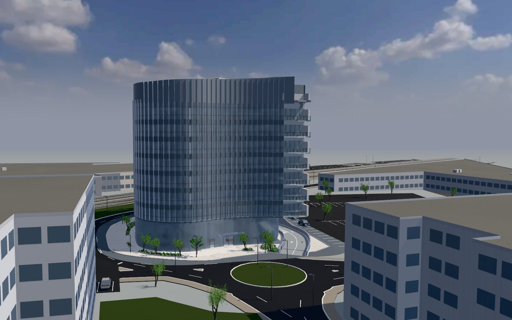
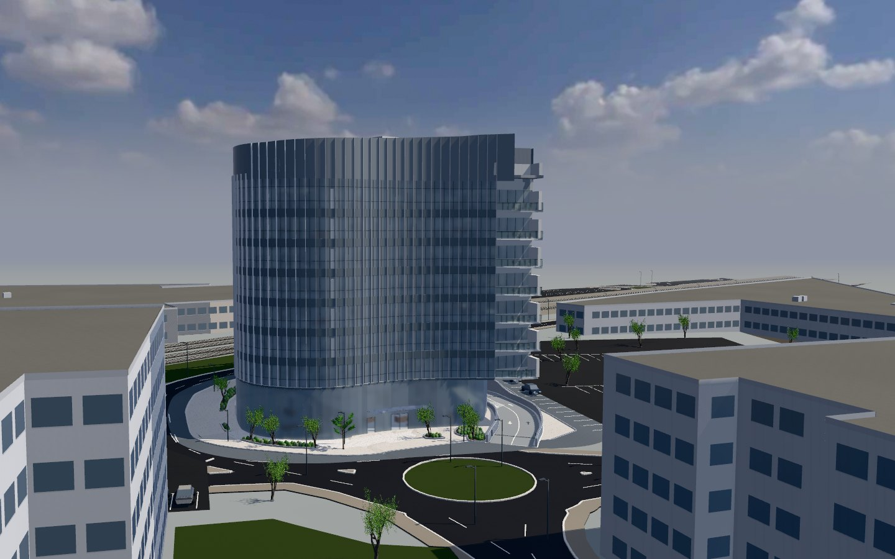
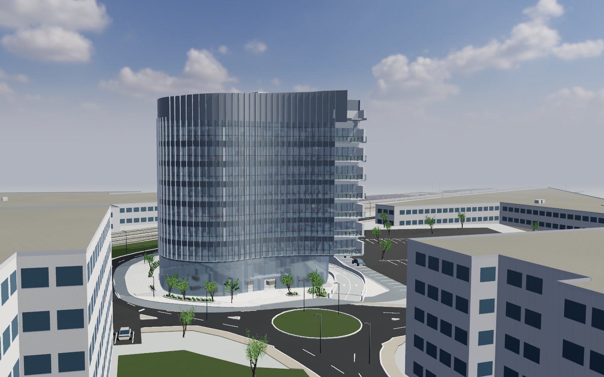
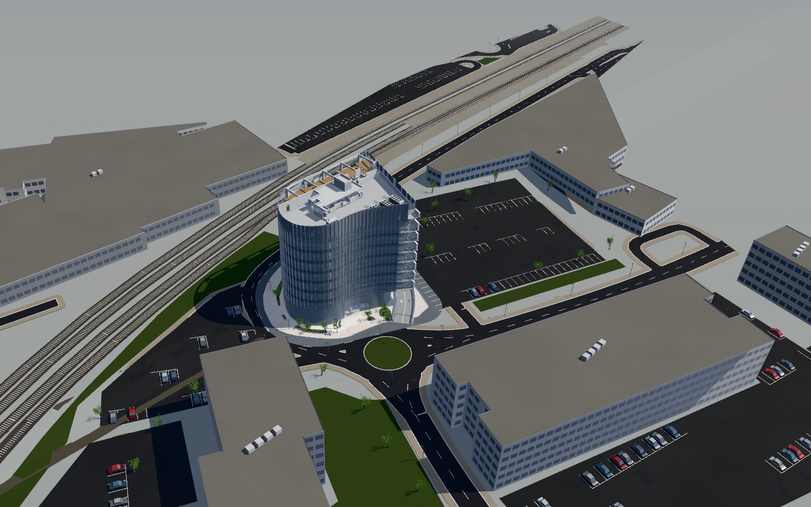
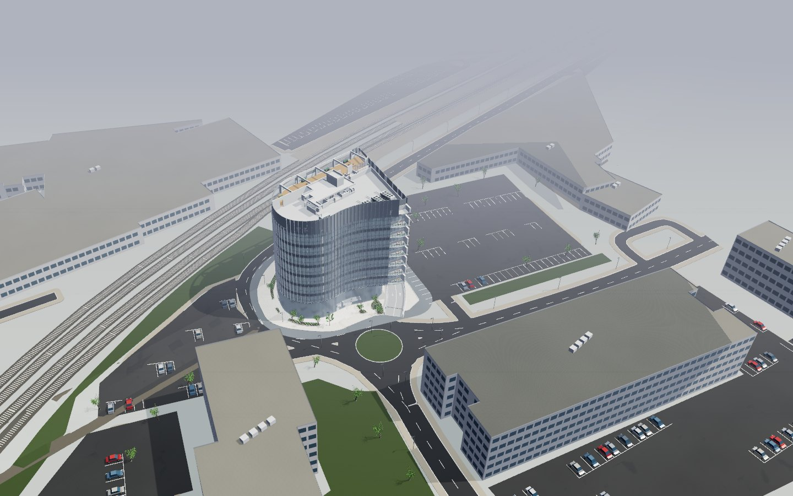

הבניין מופיע
9.1 → 4.5 שניות
חיבור של 25 מגה־ביט, ביקור ראשון.
ליטוש וביצועים · מהדורה 07
הבניין מופיע בתוך חצי מהזמן, הסביבה מגיעה פי שניים מהר, והתמונה קרובה יותר לצילום.
אותו מודל ואותם מקורות. השתנו הטעינה, ההצגה והתקלות.

במספרים
9.1 → 4.5 שניות
חיבור של 25 מגה־ביט, ביקור ראשון.
18.6 → 8.3 שניות
הכבישים, הבניינים השכנים, העצים והרכבת.
45 → 17 מגה־בייט
תמונות קטנות לגלריה, סביבה דחוסה ושמיים של 65 קילובייט.
7.5 → 4.7 מיליון משולשים
בכל תמונה של מבט החוץ. פחות חום וסוללה במחשב נייד.
0.9 → 0.1 שניות
העצים החוזרים מצוירים פעם אחת ומשוכפלים בכרטיס המסך.
410 → ~60 מגה־בייט
וההכנה לסיור יורדת משתי שניות לשליש שנייה.
התוצאה על המסך
גררו את הקו על התמונה.
אפשר גם להשתמש בסרגל ובמקשי החצים.
שמש חזקה יותר ופחות אור ממלא: צורה ועומק. שמיים חדים, זכוכית שכנים שמחזירה את השמיים.


האובך מתחיל מעבר לבניין ולא מול המצלמה. המבט האווירי צלול, והאופק עדיין נמס אל השמיים.


מה השתנה
הגלריה מקבלת תמונות קטנות ותמונה מלאה רק בהגדלה. הסביבה דחוסה ונטענת אחרי הבניין, ולא בקומות. הבניין מתחיל לרדת יחד עם הדף.
במסכים צפופים ובמסכי 4K התמונה מצוירת ברזולוציית המסך, ויורדת מעט רק אם המחשב מתקשה. שמיים ברזולוציה כפולה, צללים חדים יותר ומרקם רציף בזווית נמוכה.
מיפוי צבעים ששומר על צבעי החומרים, שמש חזקה יותר ופחות אור ממלא, אובך שמתחיל מעבר לבניין, זכוכית אמיתית בבניינים השכנים וגוון שונה לכל בניין שכן.
ההליכה על הקרקע שרואים, בלי לשקוע או לרחף. ההקפה החיצונית עוברת את החניה עד הסוף, הקישור חוזר לבניין, ובטלפון הכפתורים כבר לא מסתירים זה את זה.
המצלמה לא נעצרת באמצע מעבר, מגע לגלילה לא עוצר את הסיור, אזורי הגג מתמקדים במקום הנכון, והמקלדת לא מאבדת את מקומה אחרי כל טעינה.
גבולות המידע
הבניינים השכנים עדיין מסות להמחשה לפי מפה, לא סריקה של חזיתות אמיתיות. פנים הקומות והריהוט נשארים הצעה.
המדידות נעשו במחשב אחד ובהדמיית טלפון. מגע אמיתי ב־iPhone עדיין לא נבדק. התאורה נשארת אווירה, לא חישוב שמש לפי תאריך.